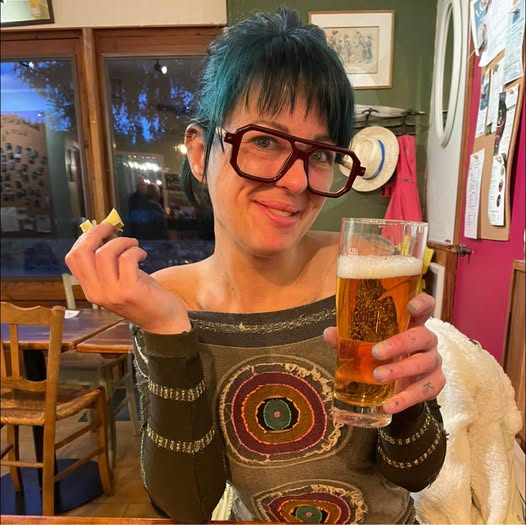

Painting the walls at Leuvenselaan 100 Tienen

After the mayheme Pico left, Cintia repainted the walls, where texts were written on, and put some beautifull flowers in aquatic blue background.
View full project🧵 Textile Stories
Combining embroidery and storytelling, this project weaves personal narratives into fabric. Inspired by memory and heritage.
View full project